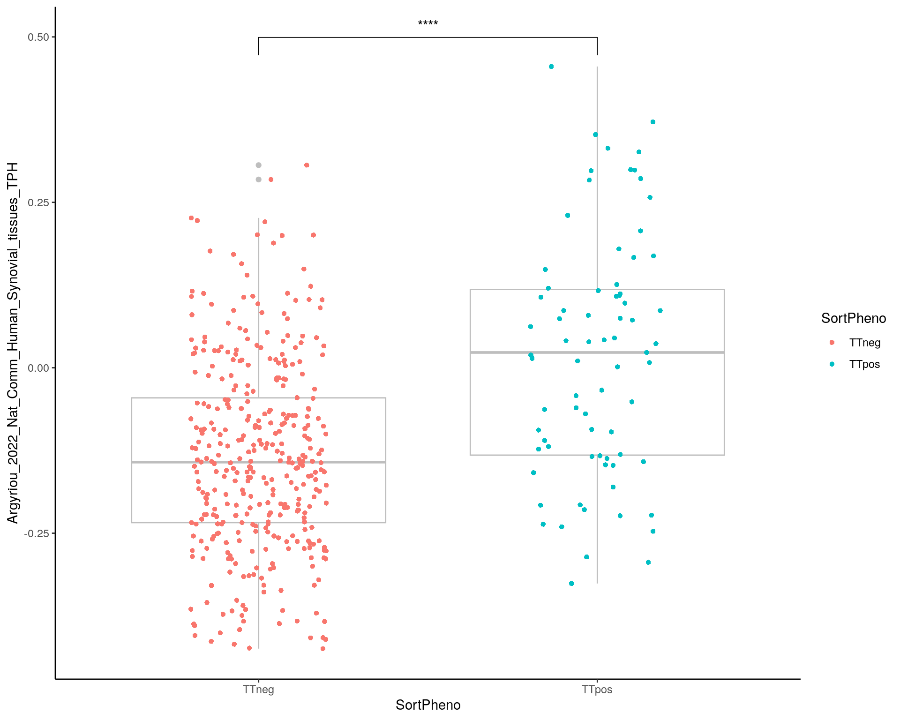

Last updated: 2024-12-24
Checks: 5 1
Knit directory: proj_distal/analysis/
This reproducible R Markdown analysis was created with workflowr (version 1.7.1). The Checks tab describes the reproducibility checks that were applied when the results were created. The Past versions tab lists the development history.
Great job! The global environment was empty. Objects defined in the global environment can affect the analysis in your R Markdown file in unknown ways. For reproduciblity it’s best to always run the code in an empty environment.
The command set.seed(12345) was run prior to running the code in the R Markdown file. Setting a seed ensures that any results that rely on randomness, e.g. subsampling or permutations, are reproducible.
Great job! Recording the operating system, R version, and package versions is critical for reproducibility.
Nice! There were no cached chunks for this analysis, so you can be confident that you successfully produced the results during this run.
Great job! Using relative paths to the files within your workflowr project makes it easier to run your code on other machines.
Tracking code development and connecting the code version to the results is critical for reproducibility. To start using Git, open the Terminal and type git init in your project directory.
This project is not being versioned with Git. To obtain the full reproducibility benefits of using workflowr, please see ?wflow_start.
# scRNA-seq
library(Seurat)
#packageVersion("Seurat")
# Plotting
library("ggplot2")
library(cowplot)
# Presentation
library("knitr")
# Others
library(stringr)
library("readxl")
library("rstatix")
library(ggpubr)
library('scales')
library( "RColorBrewer")source(here::here("R/00_generalDeps.R"))
source(here::here("R/output.R"))filt_path <- here::here("data/processed/figure4_output_seurat.rds")In this document we are going to perform plotting supplementary figure 14 panel A using Seurat.
Loading seurat object processed
if (file.exists(filt_path)) {
subset <- readRDS(filt_path)
} else {
stop("Supplementary figure 14 dataset is missing. ",
"Please check Input first.",
call. = FALSE)
}Literature-based-gene set score
gene_set_pub <- read_excel(paste0(here::here("data/processed/Gene set publications.xlsx")), col_names = FALSE, sheet = "Feuil1")
gene_set_pub <- as.data.frame(gene_set_pub)
# stocke in list
boxplot_list = list()
df_scores <- subset@meta.data[,c("UniqueCellID","SortPheno")]
for( j in c(3:5,10,12,15,16)){
paper_names = paste0(gene_set_pub[1,j],"_",gene_set_pub[3,j], "_",gene_set_pub[4,j], "_",gene_set_pub[5,j])
paper_names = gsub('\\(','',paper_names)
paper_names = gsub('\\)','',paper_names)
paper_names = gsub(' ','_',paper_names)
cat("###",paper_names, '<br>', '\n')
genes = gene_set_pub[11:nrow(gene_set_pub),j]
# Remove NA
genes <- genes[!is.na(genes)]
# filtering
genes = genes[genes %in% rownames(subset)]
subset <- AddModuleScore(subset,
features = list(genes),
ctrl = 5,
name = paper_names)
df <- subset@meta.data
df$scores_tempo = df[,ncol(df)]
stat = compare_means( scores_tempo ~ SortPheno, data = df)
# Create datatable
cat(knitr::knit_print(DT::datatable( as.data.frame(stat), height = "100%", width = "100%",
class = "compact",
rownames = FALSE,
#colnames = c("Sample", "Nb. Cells"),
options = list(dom = "<'row'rt>", # Set elements for CSS formatting ('<Blf><rt><ip>')
autoWidth = FALSE,
columnDefs = list( # Center all columns
list( targets = 0:(ncol(stat)-1),
className = 'dt-center')),
orderClasses = FALSE, # Disable flag for CSS to highlight columns used for ordering (for performance)
paging = FALSE, # Disable pagination (show all)
processing = TRUE,
scrollCollapse = TRUE,
scroller = TRUE, # Only load visible data
scrollX = TRUE,
scrollY = "525px",
stateSave = TRUE))
))
p <- ggplot(df, aes(x=SortPheno, y=eval(parse(text = paste0(paper_names, "1"))), color =SortPheno)) +
geom_boxplot(color="grey") + geom_jitter(shape=16, position=position_jitter(0.2))+
theme_classic() +
#scale_color_manual(values=col)+
theme(axis.text.x = element_text(angle = 0))
p <- p + stat_compare_means(comparisons = list(c("TTneg" , "TTpos")), label = "p.signif") + ylab(paper_names)
print(p)
# variable scope: local
boxplot_list[[paper_names]] <- local({
paper_names <- paper_names
ggplot(df, aes(x=SortPheno, y=eval(parse(text = paste0(paper_names, "1"))), color =SortPheno)) +
geom_boxplot(color="grey") + geom_jitter(shape=16, position=position_jitter(0.2))+
theme_classic() +
#scale_color_manual(values=col)+
theme(legend.position = 'none') +
stat_compare_means(comparisons = list(c("TTneg" , "TTpos")), label = "p.signif") +
xlab("") + ylab("Gene set score") + ggtitle(paper_names)
})
df_scores[[paper_names]] = subset@meta.data[[paste0(paper_names, "1")]]
cat("\n\n")
}
fig <- plot_grid(boxplot_list[[1]],
boxplot_list[[4]],
boxplot_list[[6]],
boxplot_list[[2]],
boxplot_list[[5]],
boxplot_list[[7]],
boxplot_list[[3]],
ncol = 3, labels = "A")
dir.create(here::here("output", DOCNAME), showWarnings = FALSE)
ggsave(here::here("output", DOCNAME, "suppfigure14-panelA.pdf"), fig,
width = 16, height = 11, scale = 1)
ggsave(here::here("output", DOCNAME, "suppfigure14-panelA.png"), fig,
width = 16, height = 11, scale = 1)
figsaveRDS(subset, here::here("data/processed/figure14_output_seurat.rds"))
write.table(df_scores, here::here("output", DOCNAME,"suppfigure14-raw_data.csv"), row.names=TRUE,col.names=TRUE, sep =',')devtools::session_info()─ Session info ───────────────────────────────────────────────────────────────
setting value
version R version 4.1.2 (2021-11-01)
os Ubuntu 20.04.3 LTS
system x86_64, linux-gnu
ui X11
language (EN)
collate en_US.UTF-8
ctype en_US.UTF-8
tz Etc/UTC
date 2024-12-24
pandoc 2.14.0.3 @ /usr/lib/rstudio-server/bin/pandoc/ (via rmarkdown)
─ Packages ───────────────────────────────────────────────────────────────────
package * version date (UTC) lib source
abind 1.4-5 2016-07-21 [1] RSPM (R 4.1.0)
assertthat 0.2.1 2019-03-21 [1] RSPM (R 4.1.0)
backports 1.4.1 2021-12-13 [1] RSPM (R 4.1.0)
brio 1.1.3 2021-11-30 [1] RSPM (R 4.1.0)
broom 0.7.12 2022-01-28 [1] RSPM (R 4.1.0)
bslib 0.3.1 2021-10-06 [1] RSPM (R 4.1.0)
cachem 1.0.6 2021-08-19 [1] RSPM (R 4.1.0)
callr 3.7.0 2021-04-20 [1] RSPM (R 4.1.0)
car 3.0-12 2021-11-06 [1] RSPM (R 4.1.0)
carData 3.0-5 2022-01-06 [1] RSPM (R 4.1.0)
cellranger 1.1.0 2016-07-27 [1] RSPM (R 4.1.0)
cli 3.6.1 2023-03-23 [1] RSPM (R 4.1.0)
cluster 2.1.2 2021-04-17 [2] CRAN (R 4.1.2)
codetools 0.2-18 2020-11-04 [2] CRAN (R 4.1.2)
colorspace 2.0-3 2022-02-21 [1] RSPM (R 4.1.0)
cowplot * 1.1.1 2020-12-30 [1] RSPM (R 4.1.0)
crayon 1.5.0 2022-02-14 [1] RSPM (R 4.1.0)
data.table 1.14.2 2021-09-27 [1] RSPM (R 4.1.0)
DBI 1.1.2 2021-12-20 [1] RSPM (R 4.1.0)
deldir 1.0-6 2021-10-23 [1] RSPM (R 4.1.0)
desc 1.4.1 2022-03-06 [1] RSPM (R 4.1.0)
devtools 2.4.3 2021-11-30 [1] RSPM (R 4.1.0)
digest 0.6.29 2021-12-01 [1] RSPM (R 4.1.0)
dplyr 1.0.8 2022-02-08 [1] RSPM (R 4.1.0)
ellipsis 0.3.2 2021-04-29 [1] RSPM (R 4.1.0)
evaluate 0.15 2022-02-18 [1] RSPM (R 4.1.0)
fansi 1.0.2 2022-01-14 [1] RSPM (R 4.1.0)
fastmap 1.1.0 2021-01-25 [1] RSPM (R 4.1.0)
fitdistrplus 1.1-6 2021-09-28 [1] RSPM (R 4.1.0)
fs 1.5.2 2021-12-08 [1] RSPM (R 4.1.0)
future 1.23.0 2021-10-31 [1] RSPM (R 4.1.0)
future.apply 1.8.1 2021-08-10 [1] RSPM (R 4.1.0)
generics 0.1.2 2022-01-31 [1] RSPM (R 4.1.0)
ggplot2 * 3.4.4 2023-10-12 [1] RSPM (R 4.1.0)
ggpubr * 0.4.0 2020-06-27 [1] RSPM (R 4.1.0)
ggrepel 0.9.1 2021-01-15 [1] RSPM (R 4.1.0)
ggridges 0.5.3 2021-01-08 [1] RSPM (R 4.1.0)
ggsignif 0.6.3 2021-09-09 [1] RSPM (R 4.1.0)
git2r 0.33.0 2023-11-26 [1] RSPM (R 4.1.0)
globals 0.14.0 2020-11-22 [1] RSPM (R 4.1.0)
glue 1.6.2 2022-02-24 [1] RSPM (R 4.1.0)
goftest 1.2-3 2021-10-07 [1] RSPM (R 4.1.0)
gridExtra 2.3 2017-09-09 [1] RSPM (R 4.1.0)
gtable 0.3.0 2019-03-25 [1] RSPM (R 4.1.0)
here 1.0.1 2020-12-13 [1] RSPM (R 4.1.0)
htmltools 0.5.2 2021-08-25 [1] RSPM (R 4.1.0)
htmlwidgets 1.5.4 2021-09-08 [1] RSPM (R 4.1.0)
httpuv 1.6.5 2022-01-05 [1] RSPM (R 4.1.0)
httr 1.4.2 2020-07-20 [1] RSPM (R 4.1.0)
ica 1.0-2 2018-05-24 [1] RSPM (R 4.1.0)
igraph 1.5.1 2023-08-10 [1] RSPM (R 4.1.0)
irlba 2.3.5 2021-12-06 [1] RSPM (R 4.1.0)
jquerylib 0.1.4 2021-04-26 [1] RSPM (R 4.1.0)
jsonlite 1.8.0 2022-02-22 [1] RSPM (R 4.1.0)
KernSmooth 2.23-20 2021-05-03 [2] CRAN (R 4.1.2)
knitr * 1.37 2021-12-16 [1] RSPM (R 4.1.0)
later 1.3.0 2021-08-18 [1] RSPM (R 4.1.0)
lattice 0.20-45 2021-09-22 [2] CRAN (R 4.1.2)
lazyeval 0.2.2 2019-03-15 [1] RSPM (R 4.1.0)
leiden 0.3.9 2021-07-27 [1] RSPM (R 4.1.0)
lifecycle 1.0.3 2022-10-07 [1] RSPM (R 4.1.0)
listenv 0.8.0 2019-12-05 [1] RSPM (R 4.1.0)
lmtest 0.9-39 2021-11-07 [1] RSPM (R 4.1.0)
magrittr 2.0.2 2022-01-26 [1] RSPM (R 4.1.0)
MASS 7.3-54 2021-05-03 [2] CRAN (R 4.1.2)
Matrix 1.3-4 2021-06-01 [2] CRAN (R 4.1.2)
matrixStats 0.61.0 2021-09-17 [1] RSPM (R 4.1.0)
memoise 2.0.1 2021-11-26 [1] RSPM (R 4.1.0)
mgcv 1.8-38 2021-10-06 [2] CRAN (R 4.1.2)
mime 0.12 2021-09-28 [1] RSPM (R 4.1.0)
miniUI 0.1.1.1 2018-05-18 [1] RSPM (R 4.1.0)
munsell 0.5.0 2018-06-12 [1] RSPM (R 4.1.0)
nlme 3.1-153 2021-09-07 [2] CRAN (R 4.1.2)
parallelly 1.30.0 2021-12-17 [1] RSPM (R 4.1.0)
patchwork 1.1.1 2020-12-17 [1] RSPM (R 4.1.0)
pbapply 1.5-0 2021-09-16 [1] RSPM (R 4.1.0)
pillar 1.7.0 2022-02-01 [1] RSPM (R 4.1.0)
pkgbuild 1.3.1 2021-12-20 [1] RSPM (R 4.1.0)
pkgconfig 2.0.3 2019-09-22 [1] RSPM (R 4.1.0)
pkgload 1.2.4 2021-11-30 [1] RSPM (R 4.1.0)
plotly 4.10.0 2021-10-09 [1] RSPM (R 4.1.0)
plyr 1.8.6 2020-03-03 [1] RSPM (R 4.1.0)
png 0.1-7 2013-12-03 [1] RSPM (R 4.1.0)
polyclip 1.10-0 2019-03-14 [1] RSPM (R 4.1.0)
prettyunits 1.1.1 2020-01-24 [1] RSPM (R 4.1.0)
processx 3.5.2 2021-04-30 [1] RSPM (R 4.1.0)
promises 1.2.0.1 2021-02-11 [1] RSPM (R 4.1.0)
ps 1.6.0 2021-02-28 [1] RSPM (R 4.1.0)
purrr 0.3.4 2020-04-17 [1] RSPM (R 4.1.0)
R6 2.5.1 2021-08-19 [1] RSPM (R 4.1.0)
RANN 2.6.1 2019-01-08 [1] RSPM (R 4.1.0)
RColorBrewer * 1.1-2 2014-12-07 [1] RSPM (R 4.1.0)
Rcpp 1.0.8 2022-01-13 [1] RSPM (R 4.1.0)
RcppAnnoy 0.0.19 2021-07-30 [1] RSPM (R 4.1.0)
readxl * 1.3.1 2019-03-13 [1] RSPM (R 4.1.0)
remotes 2.4.2 2021-11-30 [1] RSPM (R 4.1.0)
reshape2 1.4.4 2020-04-09 [1] RSPM (R 4.1.0)
reticulate 1.23 2022-01-14 [1] RSPM (R 4.1.0)
rlang 1.1.1 2023-04-28 [1] RSPM (R 4.1.0)
rmarkdown 2.11 2021-09-14 [1] RSPM (R 4.1.0)
ROCR 1.0-11 2020-05-02 [1] RSPM (R 4.1.0)
rpart 4.1-15 2019-04-12 [2] CRAN (R 4.1.2)
rprojroot 2.0.2 2020-11-15 [1] RSPM (R 4.1.0)
rstatix * 0.7.0 2021-02-13 [1] RSPM (R 4.1.0)
rstudioapi 0.13 2020-11-12 [1] RSPM (R 4.1.0)
Rtsne 0.15 2018-11-10 [1] RSPM (R 4.1.0)
sass 0.4.0 2021-05-12 [1] RSPM (R 4.1.0)
scales * 1.2.1 2022-08-20 [1] RSPM (R 4.1.0)
scattermore 0.7 2020-11-24 [1] RSPM (R 4.1.0)
sctransform 0.3.3 2022-01-13 [1] RSPM (R 4.1.0)
sessioninfo 1.2.2 2021-12-06 [1] RSPM (R 4.1.0)
Seurat * 4.1.0 2022-01-14 [1] RSPM (R 4.1.0)
SeuratObject * 4.0.4 2021-11-23 [1] RSPM (R 4.1.0)
shiny 1.7.1 2021-10-02 [1] RSPM (R 4.1.0)
spatstat.core 2.3-2 2021-11-26 [1] RSPM (R 4.1.0)
spatstat.data 2.1-2 2021-12-17 [1] RSPM (R 4.1.0)
spatstat.geom 2.4-0 2022-03-29 [1] RSPM (R 4.1.0)
spatstat.sparse 2.1-0 2021-12-17 [1] RSPM (R 4.1.0)
spatstat.utils 2.3-0 2021-12-12 [1] RSPM (R 4.1.0)
stringi 1.7.6 2021-11-29 [1] RSPM (R 4.1.0)
stringr * 1.4.0 2019-02-10 [1] RSPM (R 4.1.0)
survival 3.2-13 2021-08-24 [2] CRAN (R 4.1.2)
tensor 1.5 2012-05-05 [1] RSPM (R 4.1.0)
testthat 3.1.2 2022-01-20 [1] RSPM (R 4.1.0)
tibble 3.1.8 2022-07-22 [1] RSPM (R 4.1.0)
tidyr 1.2.0 2022-02-01 [1] RSPM (R 4.1.0)
tidyselect 1.1.2 2022-02-21 [1] RSPM (R 4.1.0)
usethis 2.1.5 2021-12-09 [1] RSPM (R 4.1.0)
utf8 1.2.2 2021-07-24 [1] RSPM (R 4.1.0)
uwot 0.1.11 2021-12-02 [1] RSPM (R 4.1.0)
vctrs 0.6.4 2023-10-12 [1] RSPM (R 4.1.0)
viridisLite 0.4.0 2021-04-13 [1] RSPM (R 4.1.0)
withr 2.5.0 2022-03-03 [1] RSPM (R 4.1.0)
workflowr 1.7.1 2023-08-23 [1] RSPM (R 4.1.0)
xfun 0.30 2022-03-02 [1] RSPM (R 4.1.0)
xtable 1.8-4 2019-04-21 [1] RSPM (R 4.1.0)
yaml 2.3.5 2022-02-21 [1] RSPM (R 4.1.0)
zoo 1.8-9 2021-03-09 [1] RSPM (R 4.1.0)
[1] /usr/local/lib/R/site-library
[2] /usr/local/lib/R/library
──────────────────────────────────────────────────────────────────────────────
sessionInfo()R version 4.1.2 (2021-11-01)
Platform: x86_64-pc-linux-gnu (64-bit)
Running under: Ubuntu 20.04.3 LTS
Matrix products: default
BLAS/LAPACK: /usr/lib/x86_64-linux-gnu/openblas-pthread/libopenblasp-r0.3.8.so
locale:
[1] LC_CTYPE=en_US.UTF-8 LC_NUMERIC=C
[3] LC_TIME=en_US.UTF-8 LC_COLLATE=en_US.UTF-8
[5] LC_MONETARY=en_US.UTF-8 LC_MESSAGES=en_US.UTF-8
[7] LC_PAPER=en_US.UTF-8 LC_NAME=C
[9] LC_ADDRESS=C LC_TELEPHONE=C
[11] LC_MEASUREMENT=en_US.UTF-8 LC_IDENTIFICATION=C
attached base packages:
[1] stats graphics grDevices utils datasets methods base
other attached packages:
[1] RColorBrewer_1.1-2 scales_1.2.1 ggpubr_0.4.0 rstatix_0.7.0
[5] readxl_1.3.1 stringr_1.4.0 knitr_1.37 cowplot_1.1.1
[9] ggplot2_3.4.4 SeuratObject_4.0.4 Seurat_4.1.0
loaded via a namespace (and not attached):
[1] backports_1.4.1 workflowr_1.7.1 systemfonts_1.0.4
[4] plyr_1.8.6 igraph_1.5.1 lazyeval_0.2.2
[7] splines_4.1.2 crosstalk_1.2.0 listenv_0.8.0
[10] scattermore_0.7 usethis_2.1.5 digest_0.6.29
[13] htmltools_0.5.2 fansi_1.0.2 memoise_2.0.1
[16] magrittr_2.0.2 tensor_1.5 cluster_2.1.2
[19] ROCR_1.0-11 remotes_2.4.2 globals_0.14.0
[22] matrixStats_0.61.0 spatstat.sparse_2.1-0 prettyunits_1.1.1
[25] colorspace_2.0-3 ggrepel_0.9.1 textshaping_0.3.6
[28] xfun_0.30 dplyr_1.0.8 callr_3.7.0
[31] crayon_1.5.0 jsonlite_1.8.0 spatstat.data_2.1-2
[34] survival_3.2-13 zoo_1.8-9 glue_1.6.2
[37] polyclip_1.10-0 gtable_0.3.0 leiden_0.3.9
[40] pkgbuild_1.3.1 car_3.0-12 future.apply_1.8.1
[43] abind_1.4-5 DBI_1.1.2 miniUI_0.1.1.1
[46] Rcpp_1.0.8 viridisLite_0.4.0 xtable_1.8-4
[49] reticulate_1.23 spatstat.core_2.3-2 DT_0.22
[52] htmlwidgets_1.5.4 httr_1.4.2 ellipsis_0.3.2
[55] ica_1.0-2 pkgconfig_2.0.3 farver_2.1.0
[58] sass_0.4.0 uwot_0.1.11 deldir_1.0-6
[61] utf8_1.2.2 here_1.0.1 tidyselect_1.1.2
[64] labeling_0.4.2 rlang_1.1.1 reshape2_1.4.4
[67] later_1.3.0 cachem_1.0.6 munsell_0.5.0
[70] cellranger_1.1.0 tools_4.1.2 cli_3.6.1
[73] generics_0.1.2 devtools_2.4.3 broom_0.7.12
[76] ggridges_0.5.3 evaluate_0.15 fastmap_1.1.0
[79] yaml_2.3.5 ragg_1.2.2 goftest_1.2-3
[82] processx_3.5.2 fs_1.5.2 fitdistrplus_1.1-6
[85] purrr_0.3.4 RANN_2.6.1 pbapply_1.5-0
[88] future_1.23.0 nlme_3.1-153 mime_0.12
[91] brio_1.1.3 compiler_4.1.2 rstudioapi_0.13
[94] plotly_4.10.0 png_0.1-7 testthat_3.1.2
[97] ggsignif_0.6.3 spatstat.utils_2.3-0 tibble_3.1.8
[100] bslib_0.3.1 stringi_1.7.6 ps_1.6.0
[103] highr_0.9 desc_1.4.1 lattice_0.20-45
[106] Matrix_1.3-4 vctrs_0.6.4 pillar_1.7.0
[109] lifecycle_1.0.3 spatstat.geom_2.4-0 lmtest_0.9-39
[112] jquerylib_0.1.4 RcppAnnoy_0.0.19 data.table_1.14.2
[115] irlba_2.3.5 httpuv_1.6.5 patchwork_1.1.1
[118] R6_2.5.1 promises_1.2.0.1 KernSmooth_2.23-20
[121] gridExtra_2.3 parallelly_1.30.0 sessioninfo_1.2.2
[124] codetools_0.2-18 pkgload_1.2.4 MASS_7.3-54
[127] assertthat_0.2.1 rprojroot_2.0.2 withr_2.5.0
[130] sctransform_0.3.3 mgcv_1.8-38 parallel_4.1.2
[133] grid_4.1.2 rpart_4.1-15 tidyr_1.2.0
[136] rmarkdown_2.11 carData_3.0-5 Rtsne_0.15
[139] git2r_0.33.0 shiny_1.7.1